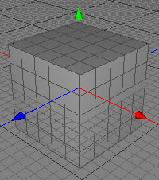
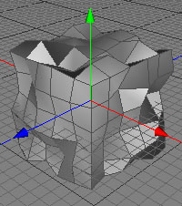
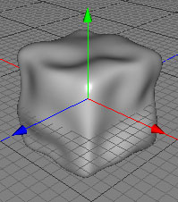

シワ加工 ツール
自然界において、多くの物質の表面は完全に平らではありません。それらにはいくつかの不規則な隆起、またはへこみがあります。シワ加工 ツールの目的は、ポリゴンメッシュにノイズを加えることです。それはリアルなオブジェクトを作ることを簡単にします。
  
立方体オブジェクトにシワ加工を施した後、サブディビジョン （反復数2）を適用することで角氷が作れます。
編集モード
シワ加工ツールはローポリゴンオブジェクトに適用できます。それはすべてのモードで利用可能です。


シワ加工ツールを使用するには、オブジェクトブラウザでローポリゴンオブジェクト を選択してください。 そしてポリゴンツールメニューからシワ加工ツールを呼び出して下さい。 今度は、ツールのプロパティエディタでシワ加工ツールの全ての必要なパラメータを設定してください。 OKボタンをクリックした後に、メッシュは皺になります。
補助キー
-
- なし
プロパティ
-
タイプ: ポイントが動かされる方向を指定します。
- 法線モード: ポイントは頂点法線に沿って動かされます。
- 軸モード: ポイントは物の座標系軸に沿って動かされます。
- 放射状モードl: ポイントはオブジェクトの中心とポイントの接続線に沿って動かされます。
-
しわの方向（内/外）
- オン: ポイントは外側に動かされます。
- オフ: ポイントを内と外の両方向に動かすことができます。
-
半径 X:
- 法線モード: 大きな値を指定するほど、ポイントを遠ざけます。法線に沿って置き換えることができます。
- 軸モード: 大きな値を指定するほど、ポイントを遠ざけます。X軸に沿って置き換えることができます。
- 放射状モード: 大きな値を指定するほど、ポイントを遠ざけます。
-
半径 Y:
- 法線モード: 効果がありません。
- 軸モード: 大きな値を指定するほど、ポイントを遠ざけます。Y軸に沿って置き換えることができます。
- 放射状モード: 効果がありません。
-
半径 Z:
- 法線モード: 効果がありません。
- 軸モード: 大きな値を指定するほど、ポイントを遠ざけます。Z軸に沿って置き換えることができます。
- 放射状モード: 効果がありません。
- 適用: OKボタンを押して、シワ加工ツールを実行してください。